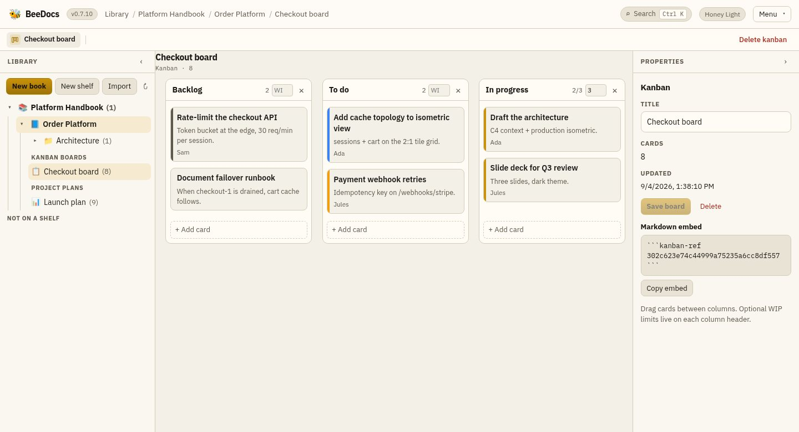
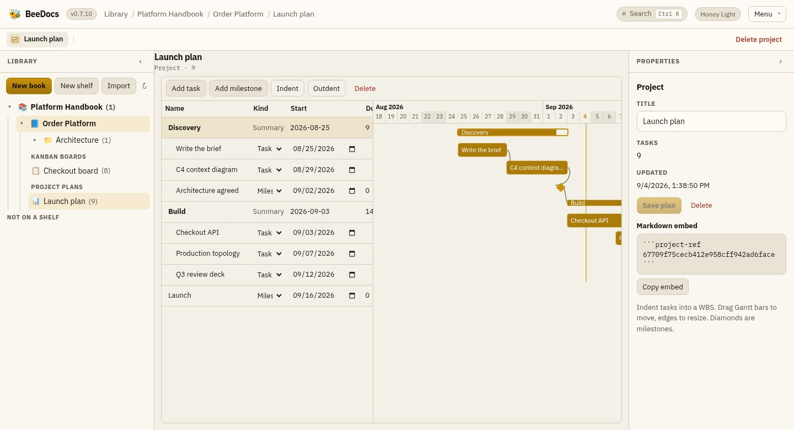
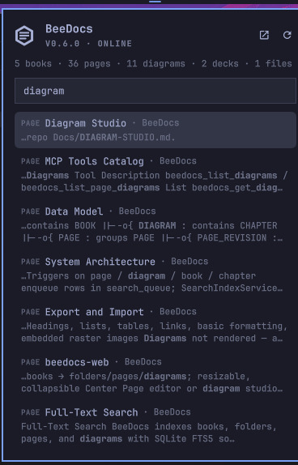

release history
Every release, and what it brought.
BeeDocs ships continuously — the version pill in the app's header maps every running instance to a commit. Here is the road so far, newest first. Everything below is in the same free, MIT-licensed build.
-
v0.8
Kanban boards, Gantt plans, and a workspace that wears your name
7 Sep 2026 · latest
The library learned to track work — and to look like yours. Boards and project plans sit next to pages and diagrams; notes click anywhere like OneNote; the instance can carry your title, mark and language.
- Notes: OneNote-style free-form pages — click empty canvas and type, then move Markdown, checklists, pictures and ink. A note is a book-tree item or a page embed (note / note-ref). Agents use beedocs_create_note_with_blocks.
- Owner-only privacy: the owner (or an admin) can hide a shelf, book or document from everyone else. Private items vanish from the tree, search and the published reader site; direct URLs 404 so existence is not leaked.
- Drop files on the library: PDF, zip and images file as attachments; Markdown asks whether to attach or become a page. An image dropped on a page still embeds.
- Kanban boards: ordered columns of cards in one JSON document, as a book-tree item or a page embed (kanban inline / kanban-ref to the stored board). Drag cards and columns, optional colour, a WIP limit, and an assignee from the user directory. Agents build them with beedocs_create_kanban_board_with_columns.
- Project plans: a WBS of tasks and milestones plus a Gantt chart — indent to nest, drag bars to move and edges to resize, finish-to-start predecessors, optional assignee. Same two embed paths (project / project-ref). Agents use beedocs_create_project_plan_with_tasks.
- Your name on the door: an admin can rename the instance and replace the mark with an uploaded or AI-drafted logo. Thirteen colour themes (including Nord, Gruvbox, Catppuccin, Tokyo Night, Rosé Pine, Solarized Light, and the Omarchy desktop palette when the server runs on one). The UI ships in seven languages — English, Français, Deutsch, Español, Nederlands, 日本語, 中文 — with documents left exactly as their authors wrote them.
- Cerebras as an AI provider: the same OpenAI-compatible writing help, pointed at https://api.cerebras.ai/v1 — open models at wafer-scale speed, a key required like the other hosted kinds.
- AI drafts as background jobs: run a repo's README, documentation or manual generation in the background, watch status from the header or the repo page, and publish the result as a page in an existing or new library book. Re-generating updates that same page as a new revision. The draft is stored before publish, so a failed write never costs the generation.
- Documentation books from a repo: a background job asks for a JSON outline, then writes 5–8 pages one at a time, and publishes them as a multi-page book. Same titles update in place on re-run.
- Sign-in and the publish key can coexist: set a machine API key from Settings without locking AI providers out of the browser. Temporary accounts must change their password before they reach the workspace.

a kanban board in the library — see it on the home page 
WBS + Gantt, same JSON document -
v0.7
Git repos on the shelf, and AI that drafts their docs
30 Aug 2026
The library learned git. Connect an account, put repositories on the shelf next to your books, and read, edit and publish to them without leaving the workspace — with your own AI model on call to draft the documentation.
- Repos as books: connect GitHub, Azure DevOps or any https clone URL, pick repositories, and browse them in the library tree — Markdown rendered like pages, code syntax-highlighted, images inline. Content is served live from a server-side clone; nothing is copied into the database.
- The full git verbs: edit with explicit save (guarded so a stale save can never overwrite someone else's), commit with a file checklist, pull, push, branch and switch — each commit authored as you, with the git email you set in your profile. Conflicted pulls back out cleanly and offer keep-ours / take-theirs.
- History and diffs: per-repo and per-file commit history (renames followed), any commit's patch, uncommitted changes at a glance, and any file opened read-only as it was at any ref. A PR button hands the branch to GitHub or DevOps.
- Search inside repos: opt a repo in and its text files join the same Ctrl+K index as pages and attachments, deep-linking straight to the file.
- Agents work the shelf too: sixteen beedocs_git_* MCP tools cover reads and writes, taught to branch first, commit only their own paths, and hand the result to a person as a PR.
- Your CLI as an AI provider: alongside OpenRouter, OpenAI, xAI, Cerebras and LM Studio, the writing help can now run the claude (Claude Code) or grok CLI already installed and signed in on your machine — no second API key.
- AI-drafted docs: right-click a repo for a README, developer documentation, user-manual or summary draft, grounded in the repository's own files and generated by your configured provider. You review the draft, then it enters history through the same save → commit → push gate as any edit.
-
v0.6
Attachments, favorites, and BeeDocs on your desktop
18–29 Aug 2026
The library now keeps the files teams actually trade — and stepped out of the browser onto the Linux desktop.
- Book attachments: upload the PDFs, Word, Excel, PowerPoint and OpenDocument files a system's paper trail is made of. Files are stored versioned behind the API gate — replacing one keeps its id, so every link survives the new revision — and drag-and-drop anywhere under a book files it there.
- Search reads inside them: PDF, OOXML, OpenDocument, RTF and plain text are extracted into the same FTS5 index as pages and diagrams, so Ctrl+K finds the clause inside the contract, not just its filename.
- Favorites: star books, pages, diagrams, decks and attachments; a panel above the library tree keeps them one click away. Starring is a personal preference, not a content write — read-only accounts get it too.
- External sign-in: delegate login to a central auth service (RBA), switchable at runtime from Settings, with roles re-mapped on every login — and local accounts kept as a deliberate break-glass path.
- Omarchy desktop plugin: on the Hyprland-based Omarchy Linux, a bar widget watches the server, searches the library from a popup panel, and opens the workspace in its own window on Super+Shift+D — with a one-command installer that builds BeeDocs and runs it as a systemd user service.

the Omarchy bar panel searching a live library — the workspace itself is one keystroke away -
v0.5
Grid page layouts
17 Aug 2026
Pages break out of the single column: pick a 2×1, 3×1, 2×2 or 3×2 grid and every section, diagram, table and image becomes a block you drag between cells — by pointer or with ←/→ on the keyboard.
- The layout lives inside the page's own Markdown as comment markers, so it round-trips through the API, MCP tools, history and imports — and a page without one is exactly what it was before.
- Preview, split view, the published bookshelf sites, the page outline and the PDF export all render the same grid; DOCX export and search read the cells as a clean linear flow.
- Switching layouts re-flows content losslessly — shrinking folds surplus cells into the last one, and 1×1 leaves a marker-free document.
- Rendered pages keep one steady cursor instead of flickering between text and arrow per section.

dragging a section between cells of a 2×2 page — watch the working video -
v0.4
Slides, the isometric editor, and cloud storage
14–16 Aug 2026
The library learned to present itself — and to draw architecture the way architects sketch it.
- Slide decks: a PowerPoint-style designer (filmstrip · canvas · format panel), a full-screen presenter, reusable templates, and export to a real .pptx that Google Slides opens natively. Decks are first-class MCP citizens too.
- Isometric diagrams: a from-scratch editor on a 2:1 dimetric tile grid — hand-drawn shapes, hover-to-connect arrows, zones and connectors — embeddable in any page and buildable by AI agents through structured MCP tools.
- Cloud storage providers: a shelf's page bodies can live in Azure Blob or Google Drive while the tree, search and metadata stay local — moves are idempotent and resumable.
- Change tracking per page (owner-gated full revision copies with pruning) and a statistics API.
- The MIT license landed in the repo — free forever, in writing.

the isometric editor — see it working 
the slide designer and presenter -
v0.3
Spreadsheets, table designer, and published bookshelves
12–14 Aug 2026
- Excel-style spreadsheet sections on any page — drop a .csv and it becomes an editable grid.
- A Markdown table designer: add and remove rows and columns in place, with themes — while storage stays plain pipe-table Markdown.
- Document linking: drag a page or book from the library tree into prose to link it.
- Published bookshelves: flip a shelf to published and it becomes a clean reader website of its own.
- API-key management for machine callers and shelf-aware publishing endpoints.
-
v0.2
SQLite, search, shelves, and sign-in
30 Jul – 12 Aug 2026
- Storage moved to embedded SQLite — no database server, one-file backups.
- Full-text search on SQLite FTS5 across pages, books and diagram labels, kept fresh by triggers whoever writes the row. Ctrl+K everywhere.
- Users & roles: admin / editor / viewer, sessions, hardened password hashing, ownership tracking — with the sign-in wall opt-in.
- Shelves above books, a free-draw sketch pad, Azure service stencils for the Studio, and export/import for books and documents.
- The MCP server updated to protocol revision 2026-07-28.
-
v0.1
The platform
29 Jul 2026
The first release already carried the whole idea: documentation that draws its own architecture, with AI agents as first-class writers.
- Library of books, chapters and Markdown pages with live Mermaid and C4 fences.
- BeeDiagram Studio — the draw.io-style editor: palette, infinite canvas, hover-to-connect arrows, format panel.
- The MCP server over stdio and Streamable HTTP, so Claude Code, Cursor and friends write docs alongside you.
- One-container deployment with Docker Compose or K3S, uploads and data on a single volume.

BeeDiagram Studio, there from the start
Versioning is MAJOR.MINOR.BUILD — the build digit ticks on every deploy, so the pill in a running app's header always maps to a commit. Minor versions above are the feature milestones.